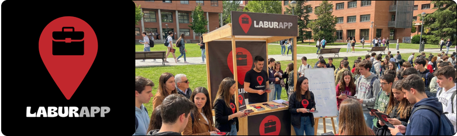

LABURAPP - ACERCA DE NOSOTROS
¿Qué es?
LaburApp es una aplicación móvil y web que conecta personas que necesitan ayuda para realizar tareas o servicios con trabajadores dispuestos a realizarlos de forma rápida y sencilla. La plataforma facilita la publicación de trabajos, la postulación de usuarios, la comunicación directa y la valoración del servicio, creando un entorno seguro y accesible para ambas partes.
¿Como nace?
LaburApp nace como un proyecto académico dentro del ciclo de Desarrollo de Aplicaciones Multiplataforma (DAM), con el objetivo de ofrecer una solución digital a la búsqueda de trabajos ocasionales y servicios locales. La idea surge al detectar la dificultad de muchas personas para encontrar ayuda de confianza y, al mismo tiempo, la necesidad de otros usuarios de acceder a oportunidades laborales flexibles.
¿Quiénes somos?
Somos Ibai García y Asier Uriarte, estudiantes de DAM y creadores de LaburApp. Como desarrolladores, hemos diseñado y construido este proyecto combinando conocimientos de programación, bases de datos y diseño de interfaces, con la intención de crear una plataforma útil, intuitiva y con impacto real en la vida de las personas.